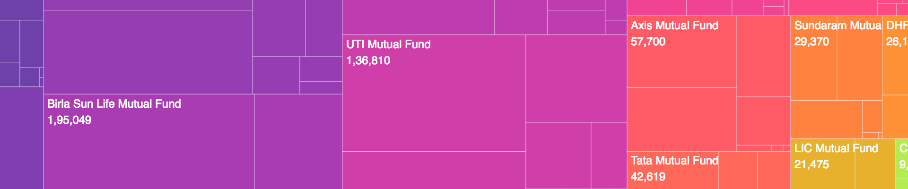
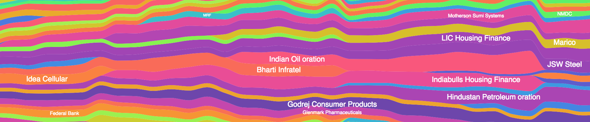
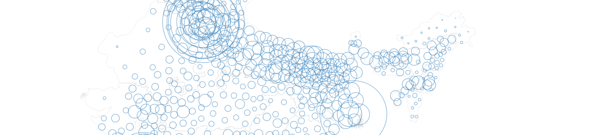
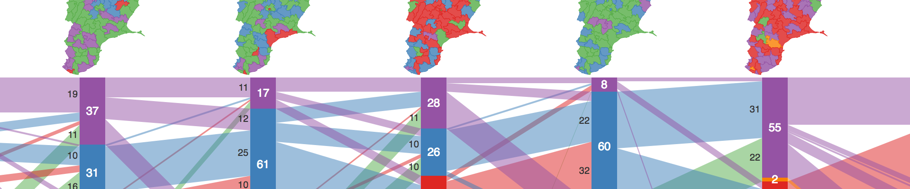
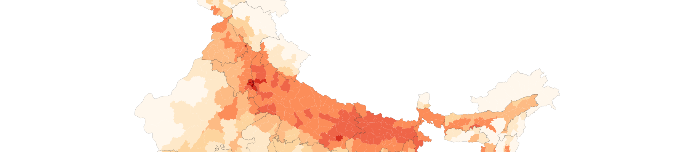
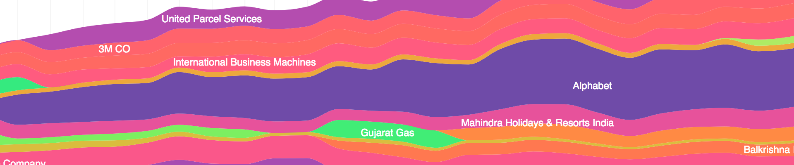
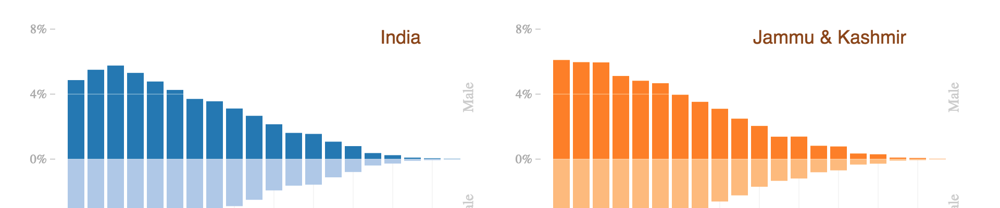
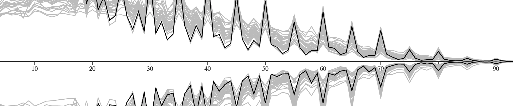

[source] Asset Under Management Over Time 
[source] Nifty Indices Composition & Market Cap 
[source] Density of Population in India 2011 
[source] Tamil Nadu State Election Results 1977 - 2006 
[source] Literacy in India 2011
[source]
Unemployment Rate in India 2011
[source] Density of Population in India 2011 
[source] Houseless People in India 2011
[source] PPFAS Mutual Fund Portfolio Composition Over Time 
[source] Population Growth in India since 1901
[source] Age Distribution per State in India 2011 
[source] Age Distribution Comparison across States in India 2011 